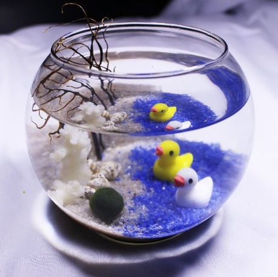

bowl

♠ 프로그램 소개 ♠
다양한 해양생물을 체험하고 기르면서 특별한 힐링의 시간을 보내세요!
♠ 프로그램 상세내용 ♠
해양생물들의 특징과 생태를 이해하고 기르는 활동을 통해 관찰력과 따뜻한 마음을 키울 수 있습니다.
또한 해양자원의 가치와 소중함을 알아보고 활용해 봅시다.
마리모수조: 동글동글한 수초 마리모를 키워보아요~!
구성 : 생물교육, 활동지, 수조셋팅(마리모+수조+바닥재+피규어)
♠ 요금안내 ♠
※ (마린프렌즈 2천원 할인)
마리모 수조 1개 20,000원